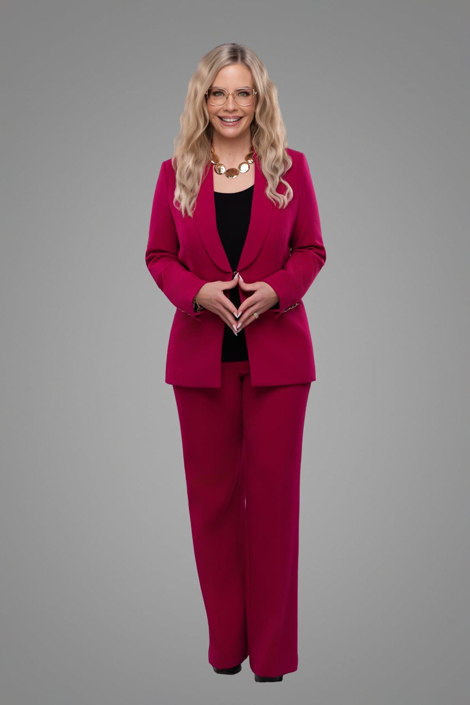

Misty's signature program
Not a quick fix. Not a temporary boost. The Standard is about sustained transformation — the kind that changes how you think, decide, and lead at every level.

The deepest container Misty leads.
The Standard takes you from diagnosis to embodiment. It is not about learning a concept — it is about becoming the leader who no longer negotiates against her own knowing.
This is where Decision-Led Leadership stops being a framework and starts becoming how you operate — in your business, your relationships, your standards, and your life.
Identity-level shifts
The Standard is designed to produce lasting changes — not temporary activation.
- Higher decision quality
- Stronger leadership presence
- Deeper self-trust
- Cleaner standards
- More consistent operating rhythm
- Less negotiation against your own knowing
For leaders past temporary activation.
The Standard is built for women who have already done the initial work — they have named their pattern, started to move, and now need the structure that keeps them there.
The program combines curriculum, coaching, and community into a sustained container designed to hold leaders through real transformation — not just insight, but embodiment.
- Structured curriculum for Decision-Led Leadership
- Direct coaching with Misty
- Community of leaders operating at the same standard
- Sustained rhythm — not a sprint, not a crash course
When Decision Drag costs too much.
There comes a point when the cost of circling, stalling, and second-guessing is higher than the cost of committing. The Standard exists for that moment — when you are done with temporary and ready for permanent.
Raise the standard.
Your next level is one decision away.
If you are ready for the deepest work Misty leads, apply now. If you are earlier in the path, start with The Decision Code.